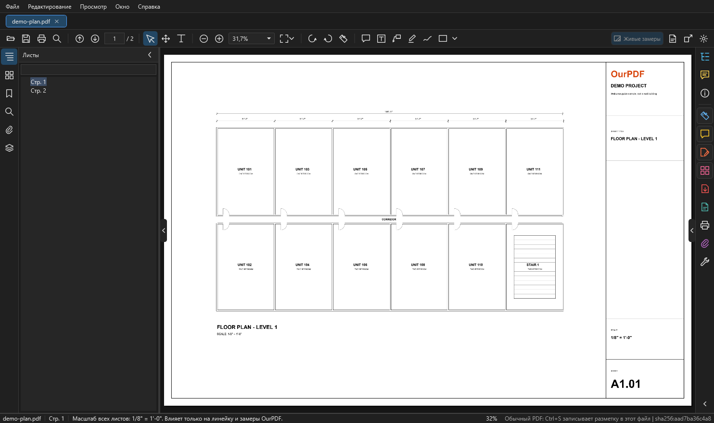

Окно программы¶
Здесь: что где в окне OurPDF, от меню до строки состояния. Нужно, чтобы быстро найти кнопку; как ей пользоваться, расписано на страницах Измерения, Комментарии и сохранение и Страницы, правка, слои.

demo-plan.pdf и панель инструментов. Слева узкая полоса вкладок и панель "Листы", в центре лист, справа полоса вкладок и инструментов, внизу строка состояния.Меню¶
| Меню | Что там |
|---|---|
Файл |
открыть, недавние, сохранить как (новый PDF с комментариями, исходный не меняется), экспорт разметки измерений в Excel, снимок проекта из .ourplan, печать, закрыть документ, выход |
Редактирование |
отменить и повторить (с названием действия, например "Отменить: Свойства разметки"), удалить комментарий, редактировать содержимое PDF, систематизировать страницы, обрезать страницы, копировать текст, найти, найти далее, настройки |
Просмотр |
страница целиком, по ширине, увеличить, уменьшить, повернуть вид по и против часовой, первая, предыдущая, следующая, последняя страница, перейти к странице, показать или скрыть линейки, полноэкранный режим |
Окно |
новое окно вида того же документа, показать или скрыть левую и правую панели, открыть нужную вкладку панели ("Справа: Комментарии", "Панель: Слои" и так далее) |
Справка |
"Как всё работает" (руководство в PDF), "Для нейросетей", горячие клавиши и настройки, папка журналов, программа по умолчанию для PDF, о программе |
Панель инструментов¶
Слева направо:
| Группа | Кнопки |
|---|---|
| Файл | Открыть (Ctrl+O), Сохранить как (Ctrl+Shift+S, новый PDF с пометками), Печать (Ctrl+P), Найти (Ctrl+F) |
| Страницы | предыдущая и следующая страница (Page Up, Page Down), поле номера: ввести номер или метку страницы и Enter (Ctrl+G), рядом общее число страниц |
| Выбор | Выделение (V), Рука (H), выделение текста рамкой (потом Ctrl+C копирует текст) |
| Масштаб вида | уменьшить, увеличить, поле масштаба в процентах, кнопка вида со стрелкой: сплошная прокрутка, по странице, режим чтения |
| Поворот | повернуть вид против и по часовой (Ctrl+Shift+R, Ctrl+R); сам PDF не меняется |
| Измерение | кнопка-линейка (Ctrl+Shift+M): открывает панель "Измерение" (Измерения) |
| Комментарии | заметка (Ctrl+6), текст на листе, маркер, рисование от руки, фигура со стрелкой выбора: прямоугольник, овал, облако, стрелка, линия, ломаная (Комментарии) |
| Справа | Живые замеры (для снимков OurPlanCore), Снимок проекта из .ourplan, отдельное окно вида (Ctrl+Shift+N), Настройки (Ctrl+,) |
У каждой кнопки есть подсказка при наведении: что делает и какая клавиша.
Вкладки слева¶
Узкая полоса значков у левого края. Щелчок открывает панель, повторный щелчок по тому же значку сворачивает её.
| Вкладка | Что там | Подробно |
|---|---|---|
Листы |
дерево страниц с именами листов, фильтр по имени; щелчок открывает лист | |
Страницы |
миниатюры; поворот выбранных страниц, удаление, вставка из файла, извлечение в новый PDF, дублирование, обрезка, перемещение выше и ниже. Ctrl и Shift выбирают несколько, перетаскивание меняет порядок | Страницы |
Закладки |
оглавление PDF | |
Поиск |
текст PDF и имена листов и такеоффов; Enter или F3 дальше, Shift+F3 назад, учитывать регистр, слово целиком | Поиск |
Вложения |
файлы внутри PDF, кнопка сохранить выбранное; вложения никогда не запускаются | |
Слои |
слои PDF, как в Acrobat: глаз показывает и прячет слой, кнопки "показать все", "скрыть все", "как в файле", "чей это слой", фильтр, только слои этой страницы | Слои PDF |
Полоса справа¶
Значки у правого края, как в Acrobat. Верхние три открывают панель справа, нижние включают инструменты.
| Кнопка | Что делает |
|---|---|
Такеоффы |
дерево такеоффов снимка проекта OurPlanCore с количествами, поиск по имени, галка "только этот лист". По умолчанию панель скрыта, открывается значком или F5 |
Комментарии |
список всех пометок и замеров документа со значениями; кнопки Удалить, Замеры в Excel..., Сохранить как PDF... (Список замеров) |
Свойства |
сведения о документе и листе |
Измерение, Комментарий |
включают инструменты, то же, что кнопки на панели сверху |
Редактировать PDF |
двигать и удалять объекты листа, править и добавлять текст и картинки (Правка PDF) |
Систематизировать страницы |
сетка страниц: порядок, поворот, удаление, вставка, извлечение, перетаскивание страниц в папку (Страницы) |
Экспорт PDF |
меню: PDF с комментариями (сохранить как), выбранные страницы в новый PDF, замеры в Excel, снимок проекта из .ourplan |
Снимок проекта |
снимок проекта из .ourplan (Снимки OurPlanCore) |
Печать |
Ctrl+P |
Вложения |
открывает вкладку "Вложения" слева |
Другие инструменты |
меню со всеми инструментами сразу: измерение, правка PDF, страницы, заметка, Excel, сохранить как, снимок, линейки, новое окно вида, печать, вложения, настройки |
Карточка свойств справа сверху¶
Когда выбран инструмент или пометка, у правого верхнего края листа появляется карточка вида: семь быстрых цветов, квадратик палитры, толщина и шрифт в пунктах, прозрачность и кнопка Удалить. При линейке это вид новых замеров, при выбранном замере или комментарии меняется он сам. Подробно: Вид замеров.
Панели и окна¶
- Стрелки на краях листа и клавиши F4 (левая панель), F5 (правая панель) сворачивают и разворачивают панели.
- Каждый файл открывается вкладкой над листом. Вкладка изменённой копии (после правки страниц или содержимого) помечена
*. - Отдельное окно того же документа: Ctrl+Shift+N или кнопка с квадратом и стрелкой. Удобно держать план на одном мониторе, а разрез на другом.
Строка состояния¶
Внизу слева направо: имя файла, номер страницы, подсказка к текущему действию, масштаб вида в процентах, тип документа.
- Подсказка меняется с инструментом: при измерении "щелчки по точкам, привязка к линиям PDF, Shift или Орто - ровно. Правая кнопка - меню. Esc - сброс", при выделении "щелчок - выбрать, пустое место двигает лист. E - выделение рамкой".
- Тип документа говорит, что сделает Ctrl+S: у обычного PDF "Ctrl+S записывает разметку в этот файл"; у снимка OurPlanCore и изменённой копии запись идёт иначе (Сохранение).
- После любой команды здесь пишется результат или причина, почему не получилось. Читайте строку состояния, когда что-то не сработало.